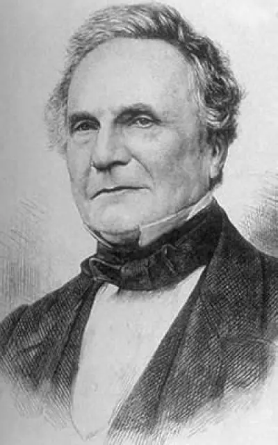
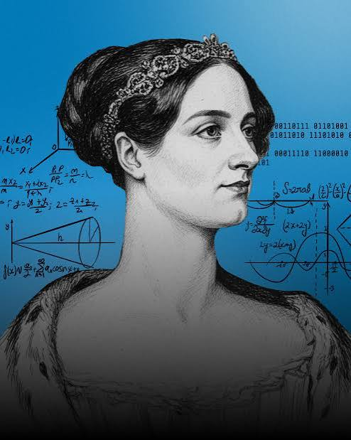
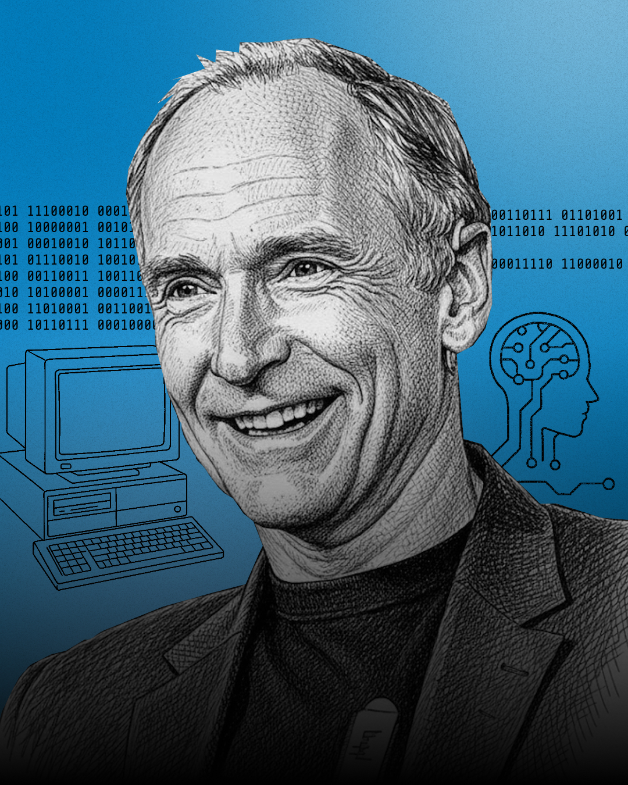

Empowerment Technologies
Is a Senior High School subject that equips students with the knowledge and skills to use Information and Communication Technologies (ICT) responsibly, creatively and effectively in academic, personal and professional settings. The course focuses on developing digital literacy, online communication, collaboration, content creation, multimedia production, web design and the ethical use of technology.
Goals of Learning Empowerment Technologies
- Digital Literacy & Skill Building: Master essential office tools, graphic software, web design, and online platforms.
- Online Safety & Ethics: Practice digital netiquette, respect copyright/intellectual property, and protect personal data from cyber threats.
- Collaborative Working: Use cloud-based tools and digital channels to communicate and complete group projects efficiently.
- Content Creation & Multimedia: Learn how to create and publish rich media (infographics, videos, blogs, websites) to effectively inform or persuade.
- Social Change & Advocacy: Harness ICT to raise awareness, build community projects, and drive positive social campaigns.
- Research & Critical Thinking: Effectively locate, evaluate, and synthesize information online to solve real-world problems.
- Career & Academic Readiness: Build modern technical skills necessary for higher education and future employment.
Pioneers of Computer Science and Technology

Charles Babbage
He is an English polymath. A mathematician, philosopher, inventor and mechanical engineer, Babbage originated the concept of a digital programmable computer.

Ada Lovelace
She is considered the first computer programmer because she developed instructions for an early computer design called the Analytical Engine.

Tim Berners-Lee
He invented the World Wide Web (WWW) and developed important technologies used to access and create websites, such as HTML, URLs, and HTTP.
James Gosling
He is known as the creator and lead designer of the Java programming language, which is used to develop software and applications.
Steve Jobs
He co-founded Apple Inc. and helped develop and popularize innovative products such as the Mac, iPhone, and iPad.
Mark Zuckerberg
He co-founded Facebook, a social media platform that allows people to communicate and connect online.